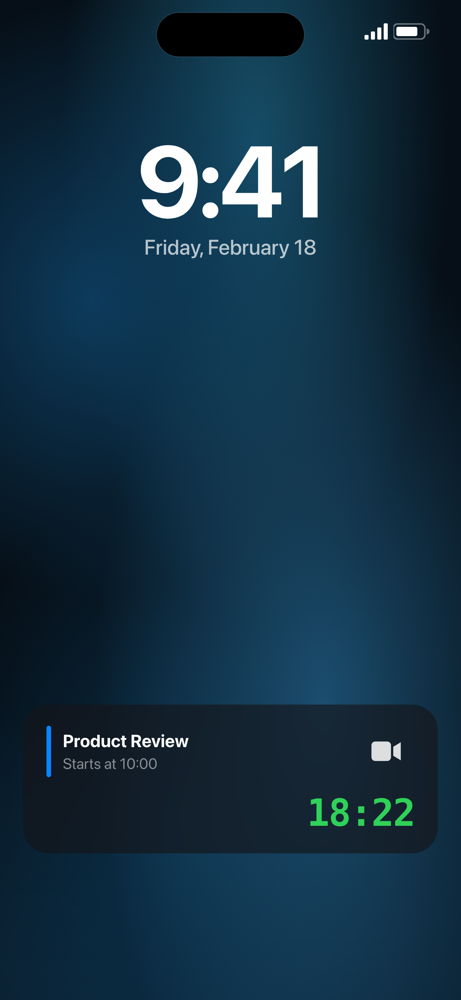

Live Activity · Dynamic Island
 Works with Zoom · Meet · Teams
Works with Zoom · Meet · Teams
The countdown to your meeting, living on your Lock Screen.
Call to Meet turns every calendar event into a live countdown — on the Lock Screen, in the Dynamic Island, and as an alarm that fires even on silent.
Works with Zoom · Meet · Teams
Alarm fired
Product Review · now
Joining Zoom…
Team Standup
18:22
